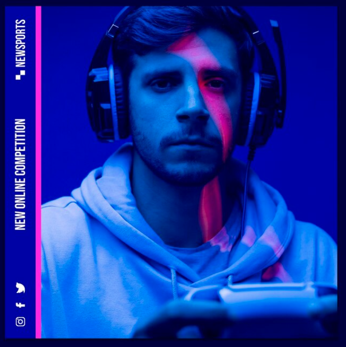
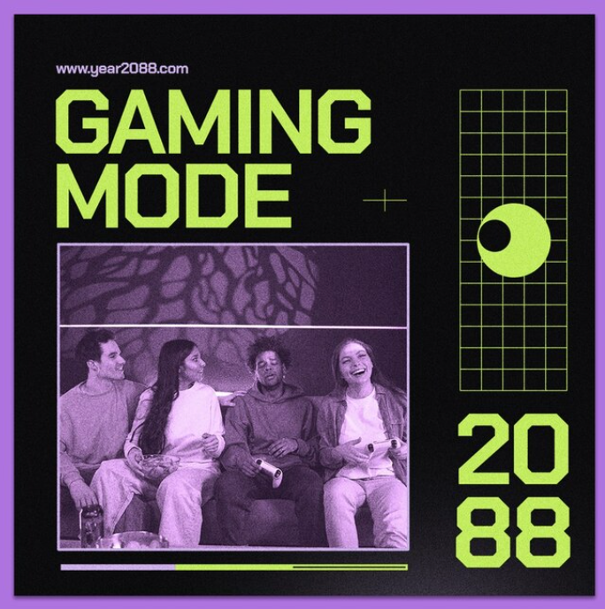
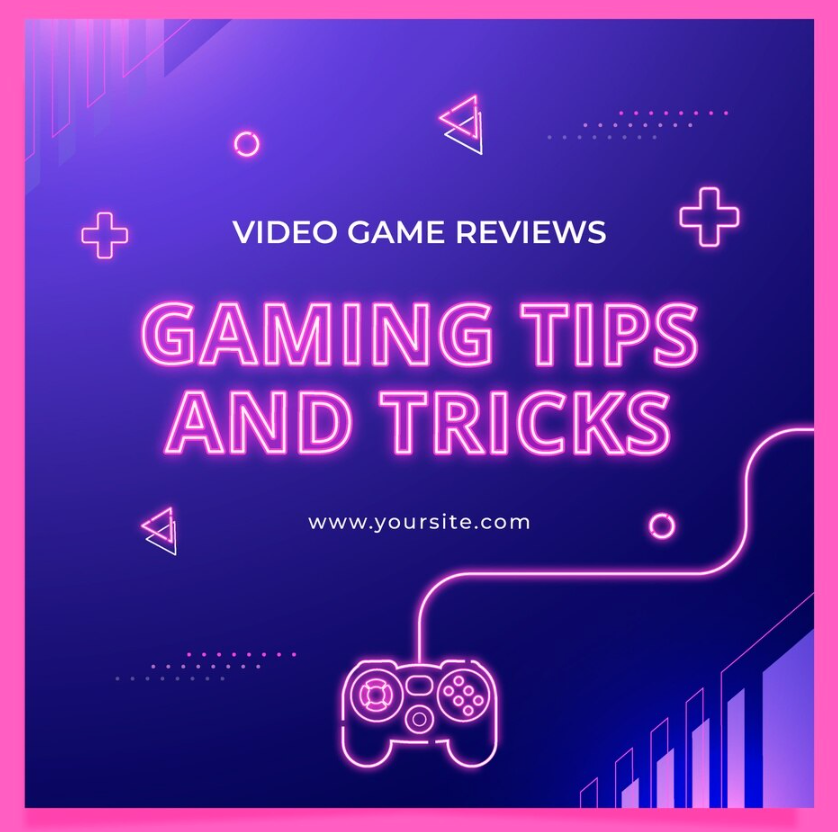
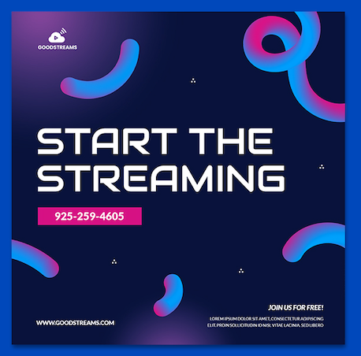

<!DOCTYPE html>
<html lang="fr" data-bs-theme="dark">
    <head>
        <meta charset="UTF-8">
        <meta name="viewport" content="width=device-width, initial-scale=1.0">
        <link rel="stylesheet" href="../main.css">
        <link href="https://cdn.jsdelivr.net/npm/bootstrap@5.3.2/dist/css/bootstrap.min.css" rel="stylesheet" integrity="sha384-T3c6CoIi6uLrA9TneNEoa7RxnatzjcDSCmG1MXxSR1GAsXEV/Dwwykc2MPK8M2HN" crossorigin="anonymous">
        <title>page-association</title>
    </head>
</html>

<body>

    <!--En-tete-->
    <section>
        <header class="p-3 text-bg-dark">
            <div class="container">
                <div class="d-flex flex-wrap align-items-center justify-content-center justify-content-lg-start">
                    <a href="../index.html"></a>
                    <ul class="nav col-12 col-lg-auto me-lg-auto mb-2 justify-content-center mb-md-0">
                        <li><a href="../index.html" class="nav-link px-2 text-white">Accueil</a></li>
                        <li><a href="./association.html" class="nav-link px-2 text-white">L'Association</a></li>
                        <li><a href="./jeuvideo.html" class="nav-link px-2 text-white">Le Jeu-Vidéo</a></li>
                        <li><a href="./article.html" class="nav-link px-2 text-white">Articles</a></li>
                        <li><a href="./benevole.html" class="nav-link px-2 text-white">Devenir Bénévole</a></li>
                        <li><a href="./soutenir.html" class="nav-link px-2 text-white">Nous Soutenir</a></li>
                    </ul>
                    
                    <form class="col-12 col-lg-auto mb-3 mb-lg-0 me-lg-3" role="search">
                        <input type="search" class="form-control form-control-dark text-bg-dark" placeholder="Rechercher..." aria-label="Search">
                    </form>
                    
                    <div class="text-end">
                        <button type="button" class="btn btn-outline-light me-2">Se Connecter</button>
                        <button type="button" class="btn btn-outline-light me-2">Agora</button>
                        <button type="button" class="btn btn-outline-warning">Admin</button>
                    </div>
                </div>
            </div>
        </header>
    </section>

    <br/><br/>

    <!--Double Header-->
    <section>
        <div class="container">
            <header class="d-flex justify-content-center py-3">
                <ul class="nav nav-pills">
                    <li class="nav-item"><a href="#le-projet" class="btn btn-outline-secondary mx-4">Le Projet</a></li>
                    <li class="nav-item"><a href="#le-champ-daction" class="btn btn-outline-secondary mx-4">Notre Champ d'Action</a></li>
                    <li class="nav-item"><a href="#la-presidence" class="btn btn-outline-secondary mx-4">La Présidence</a></li>
                </ul>
            </header>
        </div>
    </section>

    <hr />
    <br/><br/>

    <!--Heroes-->
    <section class="container">
        <main>
            
            <div class="container marketing">
                <div class="row">
                    <div class="col-lg-4 my-3 mb-0">
                        <h2 class="fw-normal" id="le-projet">Le Projet</h2>
                    </div>
                </div>
            </div> 
            
            <!-- START THE FEATURETTES -->
            
            <hr class="featurette-divider">
            
            <div class="row featurette">
                <div class="col-md-7">
                    <h2 class="featurette-heading fw-normal lh-1">La Génèse du Projet<span class="text-body-secondary"></span></h2>
                    <p class="lead">A la suite d’un recrutement effectué par Mathieu HENOC pour une association du secteur de l’esport, Maxime VENET prend le poste de directeur général. Travaillant ensemble pour apporter un meilleur suivi du personnel encadrant et des différents projets, ils découvrent une véritable complémentarité de compétences.</p>
                    <p class="lead">Au détour d’une conversation, est formulée l’idée de développer une structure socialement responsable favorisant la reconnaissance d’une discipline sportive complexe. C’est alors que le nouveau duo se retire et lance leur projet dénommé DIT : Do It Together.</p>
                    <p class="lead">Après de nombreuses semaines de réflexion pour définir l’offre et valider l’existence d’un besoin, la future association DIT dépose une demande auprès préfecture pour l’obtention de leur immatriculation. Dès lors, les collaborateurs développent ensemble une stratégie de prospection auprès d’établissements d’enseignement supérieur dans l’objectif de permettre aux étudiants de réaliser une expérience bénévole inscrite profondément dans les enjeux sociaux de notre époque et aux établissements de proposer des études de cas sur une nouvelle discipline à leurs étudiants.</p>
                </div>
                <div class="col-md-5">
                    
                </div>
            </div>
            
            <hr class="featurette-divider">
            
            <div class="row featurette">
                <div class="col-md-7 order-md-2">
                    <h2 class="featurette-heading fw-normal lh-1">Le Côté Social dans l'E-Sport <span class="text-body-secondary"></span></h2>
                    <p class="lead">En faveur du développement de l’esport et en prenant exemple sur les disciplines paralympiques mais également sur les nouvelles politiques en lien avec <em>la qualité de vie au travail</em> (QVT) il est important que notre secteur, qui est un secteur émergent s'octroie la possibilité d'inculquer quelque chose de neuf, de moderne et qui reflète son identité. </p>
                    <p class="lead">Ceci passe par la mise en oeuvre d'une réelle politique d'accompagnement et de gestion de carrières en partant du joueur jusqu'aux fonctions de direction. En devenant acteur et créateur de ce nouveau format l'e-sport devient le premier secteur d'activité bati non pas sur des profits mais sur des valeurs humaines. </p>
                    <p class="lead">La mixité et la parité doivent être un élément d'exemplarité propre au monde du jeux-vidéo avec notamment un développement systématique de l'égalité entre les sexes, interculturel et une mixité entre les individus. Malgré quelques actions qui restent faibles et peu impactant nous avons collectivement le devoir de mettre en avant, de construire, de développer et enfin d'inculquer cette culture socialement responsable.</p>
                </div>
                <div class="col-md-5 order-md-1">
                    
                </div>
            </div>
            
            <hr class="featurette-divider">
            
            <div class="row featurette">
                <div class="col-md-7">
                    <h2 class="featurette-heading fw-normal lh-1">Se Démarquer <span class="text-body-secondary"></span></h2>
                    <p class="lead">Le monde de l’esport nous réserve un avenir plein d’opportunités ainsi que de nouveaux métiers. Notre objectif est clair devenir une association reconnue d'utilité publique. Nous nous employons et nous continuerons à travailler et dialoguer avec les pouvoirs publics. Afin de toujours rester connecté aux territoires, leurs représentants et leurs associations nous réalisons un découpage nationale, régionale, départementale. Nos antennes départementale ayant pour mission première d'être au plus près des villes et villages de leur secteur.</p>
                    <p class="lead">Etant la seule entité de France spécialisée sur le secteur du jeux-vidéo ne réalisant pas et ne participant pas aux compétitions de jeux-vidéos et ne disposant d'aucune équipe de jeux, nous pouvons concentrer toute notre énérgie et notre synergie à constuire et améliorer les thématiques sociales et légal de l'e-sport et plus largement du jeux-vidéo.</p>
                    <p class="lead">C'est par le biais de ces choix que notre association peut notamment se démarquer via l'organisation interne, sa capacité d'innovation et de réflexion construite de manière collective mais également sa capacité à prévenir, sensibiliser, informer et démocratiser les attraits du jeux-vidéo que la DIT peut avec vous valoriser l'e-sport et le monde du jeux-vidéo.</p>
                </div>
                <div class="col-md-5">
                    
                </div>
            </div>
            
            <hr class="featurette-divider">

            <div class="row featurette">
                <div class="col-md-7 order-md-2">
                    <h2 class="featurette-heading fw-normal lh-1">Nos Valeurs<span class="text-body-secondary"></span></h2>
                    <p class="lead"><U>Accessibilité :</U></p>
                    <p class="lead">Dans une démarche de rendre le monde de l’esport accessible aux personnes en situation de handicap, l’association DIT veut favoriser l’égalité des chances et une meilleure parité homme- femme afin de professionnaliser ce secteur pour lesdites personnes.</p>
                    <p class="lead"><U>Investissement :</U></p>
                    <p class="lead">Au-delà des fonctionnements associatifs déjà existants, l’association DIT veut véritablement se positionner comme un centre de développement pour ses collaborateurs. L’objectif est de développer leurs compétences et de favoriser l’investissement personnel, le touten portant des projets de société forts et concrets.</p>
                    <p class="lead"><U>Engagement :</U></p>
                    <p class="lead">En militant ensemble, nous ne « donnons » pas notre temps ou notre énergie. Nous ne faisons qu’agir en citoyens. En travaillant pour les causes qui nous tiennent à cœur, nous nousengageons les uns envers les autres à nous soutenir, nous défendre et nous hisser collectivement vers le développement d’une meilleure intégration dans le monde de l’esport.</p>
                    <p class="lead"><U>Ouverture :</U></p>
                    <p class="lead">Le premier obstacle à la construction d’une nouvelle vision, c’est la division. Trop souvent, nous laissons nos différences et nos préjugés s’interposer entre nous. C’est pourquoi, dans les projets que nous menons, nous gardons toujours un esprit et des bras grands ouverts pour l’ensemble des acteurs. Le soutien de nos équipes, notre notion de groupe et la bienveillance quenous portons, sont nos fers de lance.</p>
                </div>
                <div class="col-md-5 order-md-1">
                    
                </div>
            </div>
            
            <hr class="featurette-divider">
            
            <!-- /END THE FEATURETTES -->
        </main>
        
    </section>

    <br/><br/>

    <section class="container">

        <div class="container marketing">
            <div class="row">
                <div class="col-lg-4 my-3 mb-0">
                    <h2 class="fw-normal" id="le-champ-daction">Notre Champ d'Action</h2>
                </div>
            </div>
        </div> 

        <hr/>

        <div class="row mb-2">
            <div class="col-md-6">
                <div class="row g-0 border rounded overflow-hidden flex-md-row mb-4 shadow-sm h-md-250 position-relative">
                    <div class="col p-4 d-flex flex-column position-static">
                        <strong class="d-inline-block mb-2 text-primary-emphasis"><h3>Le Constat</h3></strong>
                        <p class="card-text mb-auto">Lors de notre enquête de terrain, l'association a relevée que la compétition de jeux-vidéos restait méconnue et incomprise du grand public. D'autre part, un élément alarmant est ressorti : les associations et clubs e-sportif rencontrent de réelles difficultées à creer, penser et structurer leur gestion et leurs projets.</p><br/>
                        <p class="card-text mb-auto"> Ceux-ci restant liés à une carence de moyens et de connaissances tant sur ce secteur emergent que sur la capacité à piloter ces entités. Cette problématique contraint les dirigeants d'associations et de clubs à mettre de côté voir oublier certains sujets pourtant cruciaux, tel que la valorisation des bénévoles, la technique de gestion ou encore la politique sociale.<br/><br/><br/><br/><br/><br/></p>
                    </div>
                </div>
            </div>
            
            <div class="col-md-6">
                <div class="row g-0 border rounded overflow-hidden flex-md-row mb-4 shadow-sm h-md-250 position-relative">
                    <div class="col p-4 d-flex flex-column position-static">
                        <strong class="d-inline-block mb-2 text-success-emphasis"><h3>Axes de Développement</h3></strong>
                        <p class="mb-auto">Suite à ce constat qui vient fortement impacter le développement de notre secteur, notre association a choisis de travailler au plus proche des territoires notamment en étant en lien direct avec les associations et clubs e-sportif de France. Ce travail conjoint vient entre autre appuyer et coordonner de manière uniforme la gestion globale de toutes les entitées e-sportives du territoire nationale. L'association transmet également des valeurs humaines et permet à ses bénéficiaires de devenir <strong><em>socialement responsable.</em></strong> Les membres de l'association ayant des parcours riches et variés, ils nous permettent de transmettre tout notre savoir et nos compétences à la compétition de jeux-vidéos de demain. Les compétences de l'ensemble de nos bénévoles nous permettent donc de travailler et d'accompagner sur la gestion globale et administrative des associations, tel que la mise en conformité administrative et fiscale ; la création et la mise en oeuvre d'une stratégie de développement ; la valorisation et la gestion du potentiel humain ainsi que l'application et l'actualisation de la règlementation.</p>
                    </div>
                </div>
            </div>
        </div>
        <hr/>
    </section>

    <br/><br/>

    <section class="container">

        <div class="container marketing">
            <div class="row">
                <div class="col-lg-4 my-3 mb-0">
                    <h2 class="fw-normal" id="la-presidence">La Présidence</h2>
                </div>
            </div>
        </div> 

        <hr/>

        <div class="d-md-flex flex-md-equal w-100 my-md-3 ps-md-3">
            <div class="text-bg-dark me-md-3 pt-3 px-3 pt-md-5 px-md-5 text-center overflow-hidden col-lg-6 ">
                <div class="my-3 py-3">
                    <h2 class="display-5">Mathieu Henoc</h2>
                    <p class="lead">Mathieu HENOC, ancien professionnel de santé il reste très attaché à la sécurité et à la santé lié <em>"au travail".</em> Egalement ancien indépendant il dispose des connaissances et de l'expérience en lien avec la gestion d'entreprise. Diplômé d'un master en Ressources Humaines il vient appuyer son regard de développement stratégique en lien avec le potentiel humain. Travaillant dans une PME lui permettant d'affiner et d'expérimenter sa vision et sa technique afin de mieux préparer et construire les enjeux de demain.<br/><br/><br/></p>
                </div>
                <div class="bg-body-tertiary shadow-sm mx-auto" style="width: 80%; height: 300px; border-radius: 21px 21px 0 0;"></div>
            </div>
            <div class="bg-body-tertiary me-md-3 pt-3 px-3 pt-md-5 px-md-5 text-center overflow-hidden col-lg-6">
                <div class="my-3 p-3">
                    <h2 class="display-5">Maxime Venet</h2>
                    <p class="lead">Maxime VENET diplômé d'une formation en école d’ingénierie générale option Ressources Humaines en alternance il a su développer des compétences techniques liés à la réflexion, la rédaction et la mise en oeuvre de la gestion de projets. A l'issue de sa formation il s'est ré-orienté dans une filiaire de droit option science-politique afin de mieux appréhender les différents freins législatifs impactant le développement de notre secteur. Fort de ces différents voyages à l'étranger il s'appuie sur l'ensemble des cultures rencontrées pour penser, construire, développer et améliorer avec Mathieu l'e-sport de demain.</p>
                </div>
                <div class="bg-dark shadow-sm mx-auto" style="width: 80%; height: 300px; border-radius: 21px 21px 0 0;"></div>
            </div>
        </div>

    </section>

    <hr/>

    <!--Footer-->
    <section class="container">
        <div class="container">
            <footer class="py-5 text-center">
                <div class="row">
                    <div class="col-6 col-md-3 mb-2">
                        <h5>Adresse</h5>
                        <ul class="nav flex-column">
                            <li class="nav-item mb-2">24 Allée de Monchevreau</li>
                            <li class="nav-item mb-2"> 58200 Cours-Cosne-sur-Loire</li>
                        </ul>
                    </div>
                    
                    <div class="col-6 col-md-3 mb-2">
                        <h5>Téléphone</h5>
                        <ul class="nav flex-column">
                            <li class="nav-item mb-2">06.58.54.63.33</li>
                        </ul>
                    </div>
                    
                    <div class="col-6 col-md-3 mb-2">
                        <h5>E-Mail</h5>
                        <ul class="nav flex-column">
                            <li class="nav-item mb-2"><a href="mailto:contact@dit-association.com"></a>contact@dit-association.com</li>
                        </ul>
                    </div>
                    
                    <div class="col-6 col-md-3 mb-3">
                        <form>
                            <h5>Do It Together</h5>
                            <p><em>Seul on va plus vite, Ensemble on va plus loin !</em></p>
                        </form>
                    </div>
                </div>
                
                <div class="d-flex flex-column flex-sm-row justify-content-between py-4 my-4 border-top">
                    <p>© 2023 | D.I.T. All rights reserved.</p>
                    <ul class="list-unstyled d-flex">
                        <li><a class="social-link twitter" href="https://twitter.com/AssociationDit" target="_blank"><span class="icon-twitter fab fa-twitter"><span class="sr-only"></span></span></a></li>
                        <li><a class="social-link linkedin" href="https://www.linkedin.com/in/association-do-it-together-84aa21212/" target="_blank"><span class="icon-linkedin fab fa-linkedin"><span class="sr-only"></span></span></a></li>
                    </ul>
                </div>
            </footer>
        </div>
        
    </section>


    <script src="https://cdn.jsdelivr.net/npm/bootstrap@5.3.2/dist/js/bootstrap.bundle.min.js" integrity="sha384-C6RzsynM9kWDrMNeT87bh95OGNyZPhcTNXj1NW7RuBCsyN/o0jlpcV8Qyq46cDfL" crossorigin="anonymous"></script>
</body>